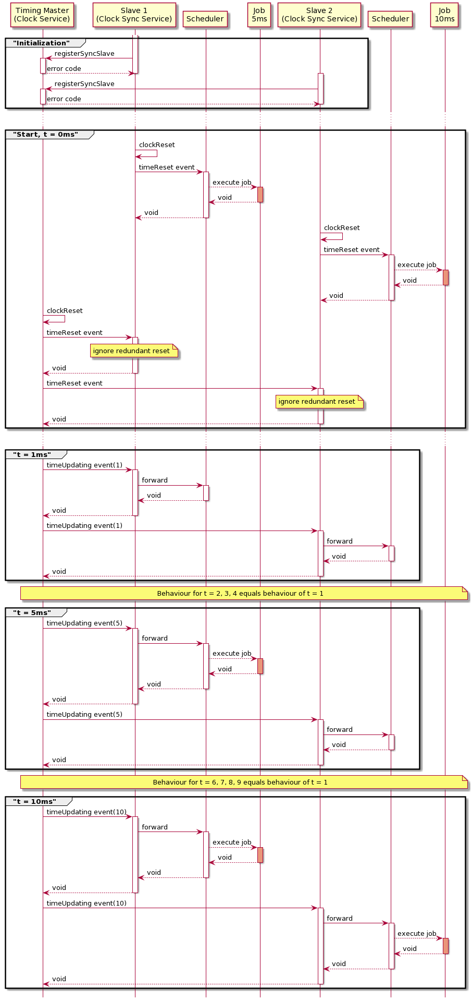
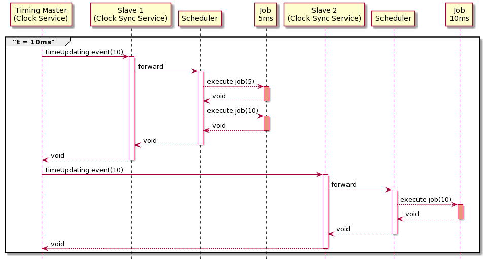
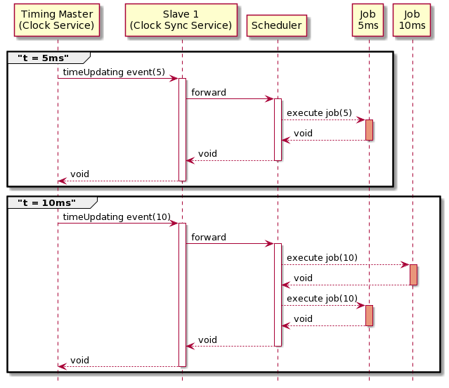

Time Synchronization and Scheduling explained
This page introduces a more detailed look into the time synchronization and scheduling mechanisms used.
The section Continuous Time Synchronization refers to the setups in Master/Slave continuous synchronization. The section Discrete Time Synchronization refers to the setups in Master/Slave discrete synchronization.
Continuous Time Synchronization
In case of a Continuous Time Synchronization the master and the slave will each run with their own continuously increasing clock.
In an interval of FEP3_CLOCKSYNC_SERVICE_CONFIG_SLAVE_SYNC_CYCLE_TIME the slave will ask the master for its current time and synchronize its clock to that time.
The frequency at which a continuous timing slave clock shall synchronize its time with the corresponding timing master depends heavily on the use case.
One has to weigh up the necessity to stay in sync with the timing master and the communication overhead which comes along with clock synchronization.
The Scheduler Service of the slaves will schedule jobs based on that time.
For this Use Case the following components are used:
Clock Service (local_system_realtime) for Timing Master
Clock Sync Service (slave_master_on_demand) for all Timing Slaves
Scheduler Service (clock_based_scheduler) for all participants
An Example
The following demonstrates such a time synchronization.
We have the following setup:
A Timing Master (local_system_realtime).
A Timing Slave 1 which has one job with a cycle time of 5ms (slave_master_on_demand with a sync cycle time of 100 ms).
A Timing Slave 2 which has one job with a cycle time of 10ms (slave_master_on_demand with a sync cycle time of 50 ms).
Due to the FEP3_CLOCKSYNC_SERVICE_CONFIG_SLAVE_SYNC_CYCLE_TIME the Timing Slave 1 will ask for the master’s time every 100 ms and synchronize its clock to that time.
The Timing Slave 2 will do the same but every 50 ms.
Timing Slave 1 will then, based on his synchronized clock, schedule a job every 5ms. Timing Slave 2 will schedule a job every 10ms.
If using this kind of time synchronization, the clocks of the participants could drift apart in between the synchronization intervals, because every participant and its configured clock progress independently from the timing master or any other FEP participant. In contrast to Discrete Time Synchronization, this type of synchronization allows timing slaves to synchronize its continuously progressing clocks with a continously progressing timing master clock and execution of jobs without blocking execution of other participants in the same FEP system.
Discrete Time Synchronization
The master emits timeUpdating events whenever its time changes. This event is sent to all timing slaves. If a timing slave receives such an event it might schedule one or more jobs.
The frequency of timeUpdating events depends on the implementation of the main clock.
For example the local_system_simtime clock sends timeUpdating events in the resolution of properties FEP3_CLOCK_SERVICE_CLOCK_SIM_TIME_STEP_SIZE
and FEP3_CLOCK_SERVICE_CLOCK_SIM_TIME_TIME_FACTOR based on the clock of the operating system.
It waits for acknowledgments of all timing slaves and continues progressing once all acknowledgments have been received.
While it does not publish timeUpdating events if acknowledgments are pending, it does take into account the time which passes while waiting for acknowledgments and might immediately publish another timeUpdating event
if the next time step has passed already while waiting for the timing slave acknowledgments.
In contrast an external_player might send timeUpdating events whenever it processes data with a new timestamp. The slave_master_on_demand_discrete sync clock on the slave side will receive the timeUpdating events and update the local clock of the slave accordingly. The Scheduler Service and the corresponding scheduler might then schedule jobs based on the new time and concrete scheduler implementation. For further information regarding the scheduling behaviour of the native scheduler have a look at clock_based_scheduler.
Timing slaves have to register to the timing master to receive timeUpdating events. To do so the slaves have to specify the property FEP3_CLOCKSYNC_SERVICE_CONFIG_TIMING_MASTER.
For this Use Case the following components (and settings) are used:
Clock Service (local_system_simtime) for Timinig Master
Clock Sync Service (slave_master_on_demand_discrete) for all Timing Slaves
Scheduler Service (clock_based_scheduler) for all participants
Example 1
The following demonstrates such a time synchronization.
We have the following setup:
A Timing Master emitting timeUpdating events for every 1 ms (local_system_simtime (1ms)).
A Timing Slave 1 which has one job with a cycle time of 5 ms (slave_master_on_demand_discrete).
A Timing Slave 2 which has one job with a cycle time of 10 ms (slave_master_on_demand_discrete).
Due to the FEP3_CLOCK_SERVICE_CLOCK_SIM_TIME_STEP_SIZE of 1 ms the master sends a timeUpdating event for every 1 ms it simulates.
The time update message is broadcasted to all simulation participants.
For every participant it waits for the acknowledgement that the event has been processed and the new simulation time has been reached.
If new jobs are triggered then the acknowledgement is delayed until all jobs are completed.
In detail this will lead to the following behaviour:
While time update and reset event calls to multiple participants are being performed simultaneously, the timing master waits for all of them to be finished until he progesses. All other calls in the previous overview are blocking which means the timing master will not progress until all timing slaves have acknowledged the progress in time and potential job executions.
The following table outlines the behaviour for a simulation duration of 10ms.
Time |
What happens |
|---|---|
During initialization Slave 1 and Slave 2 will register themselves as timing slaves. |
|
0 ms |
All participants start their components. The participant clocks are started and reset. A local time reset event is published by each participant which triggers the local schedulers and therefore every job with time == 0. The master will emit the timeReset event with time == 0. The slaves will ignore the timeReset event as it is redundant. |
1 ms - 4 ms |
timeUpdating events will be emitted but no Job will be executed. |
5 ms |
At simulation time 5 ms the Slave 1 will trigger its 5 ms Job. Slave 2 won’t execute its 10 ms Job. The Timing master waits until the scheduler of Slave 1 has executed the job. |
6 ms - 9 ms |
timeUpdating events will be emitted but no Job will be executed. |
10 ms |
At simulation time 10 ms the Slave 1 will trigger its 5 ms Job again. The Slave 2 will trigger its 10 ms job for the first time. The Timing Master waits until the schedulers of Slave 1 and Slave 2 have both executed the jobs. |
Example 2
We have the following setup:
A Timing Master emitting timeUpdating events for every 10 ms (local_system_simtime (10ms)).
A Timing Slave 1 which has one job with a cycle time of 5 ms (slave_master_on_demand_discrete).
A Timing Slave 2 which has one job with a cycle time of 10 ms (slave_master_on_demand_discrete).
Due to the FEP3_CLOCK_SERVICE_CLOCK_SIM_TIME_STEP_SIZE of 10 ms the master sends a timeUpdating event for every 10 ms it simulates.
As the simulation step size is higher than the cycle time of the job registered at the Timing Slave 1 participant, the job will be triggered multiple times if
the Timing Master participant sends a timeUpdating event.
In detail this will lead to the following behaviour:
Behaviour similar to previous examples, e.g. initialization and start phase of Example 1, is skipped for the sake of clarity.
The following table outlines the behaviour for a simulation duration of 10ms.
Time |
What happens |
|---|---|
10 ms |
At simulation time 10 ms the Slave 1 will trigger its 5 ms Job with time == 5. Afterwards it will trigger the same Job again with time == 10. The second trigger does not take into account any more time update or reset events and is not synchronized with other participants or the timing master in any way. Therefore such a configuration is not recommended. The Slave 2 will trigger its 10 ms job with time == 10. The Timing Master waits until the schedulers of Slave 1 and Slave 2 have both executed the jobs. |
Example 3
We have the following setup:
A Timing Master emitting timeUpdating events for every 5 ms (local_system_simtime (5ms)).
A Timing Slave 1 which has two jobs with a cycle time of 5 ms and 10 ms (slave_master_on_demand_discrete).
Due to the FEP3_CLOCK_SERVICE_CLOCK_SIM_TIME_STEP_SIZE of 5 ms the master sends a timeUpdating event for every 5 ms it simulates.
As the Timing Slave 1 participant has two jobs with varying cycle times registered it will trigger different jobs at different times.
In detail this will lead to the following behaviour:
Behaviour similar to previous examples, e.g. initialization and start phase of Example 1, is skipped for the sake of clarity.
The following table outlines the behaviour for a simulation duration of 10ms.
Time |
What happens |
|---|---|
5 ms |
At simulation time 5 ms the Slave 1 will trigger its 5 ms Job. It wont execute its 10 ms Job. The Timing master waits until the scheduler of Slave 1 has executed the job. |
10 ms 10 ms |
At simulation time 10 ms the Slave 1 will trigger its 10 ms Job with time == 10 and its 5 ms Job with time == 10. The Timing Master waits until the schedulers of Slave 1 and Slave 2 have both executed the jobs. |